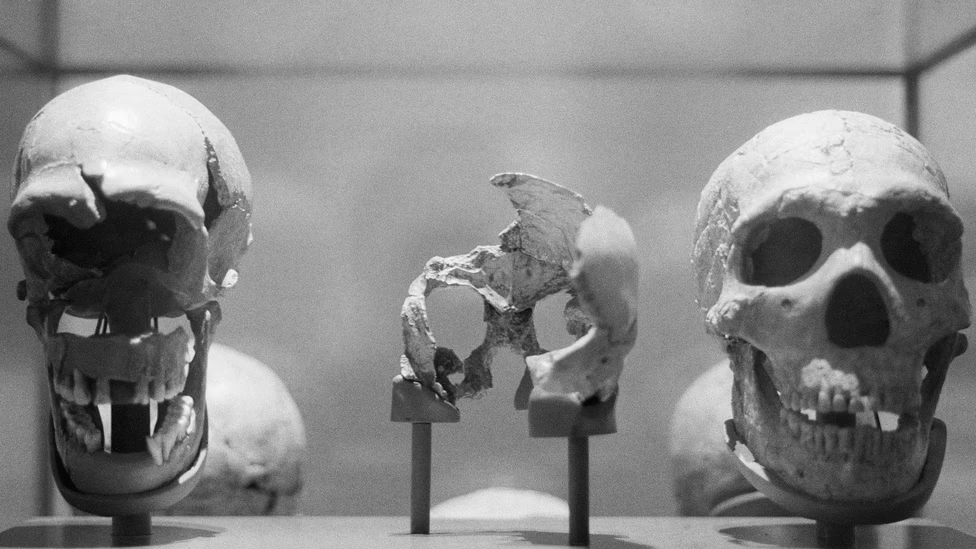

NOVAMART NEWS
Science
The Human-Origin Story Is Being Radically Revised
New secrets from our past have been coming out in droves.

August 8, 2026, 8 AM ET
Some 50,000 years ago, modern humans wandered into Ice Age Europe. The continent was new to us Homo sapiens, but not for
beings of our general kind. Neanderthals and their ancestors had been living among Eurasia’s glaciers for ages, and in
ways that would have struck us as familiar. Evidence suggests that they may have strung eagle talons together into
necklaces and stained their bodily ornaments with pigments. They tended fires, cooked food, and maybe even made their
own glue. On sandstone cave walls, they etched wavy lines, dots, and other geometric designs.
After first contact, under social circumstances that we cannot possibly imagine, modern humans and Neanderthals had
children together; around the same time, in Asia, our species also procreated with another species, the Denisovans.
Scientists know this because they have sequenced DNA from Neanderthal and Denisovan remains, and they can see fragments
of their code in our genomes to this day. Now we are learning that still more of these fusions of blood and culture may
have shaped our lineage. Last week, a team of researchers from UC Berkeley and Johns Hopkins University published new
evidence in Science suggesting that two “ghost” ancestors haunt our family tree—not Neanderthals or Denisovans, but some
other hominin populations.